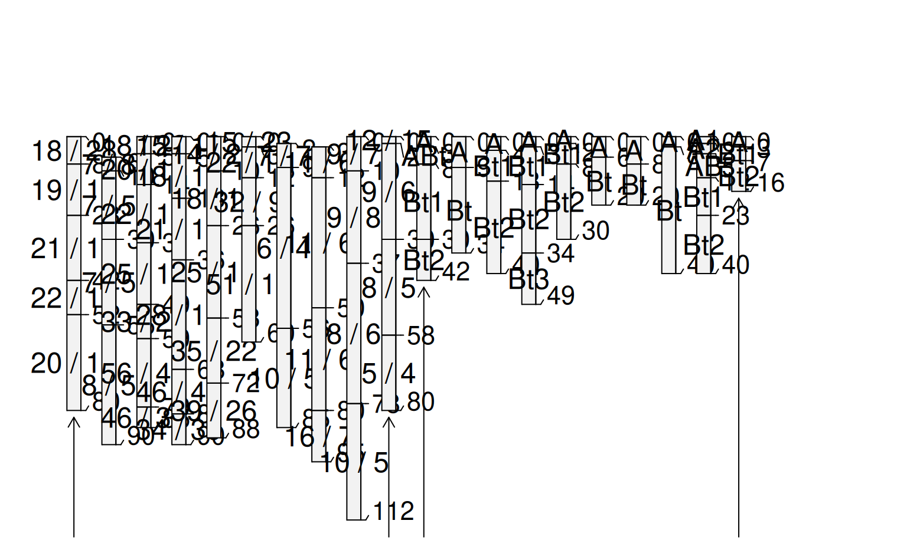
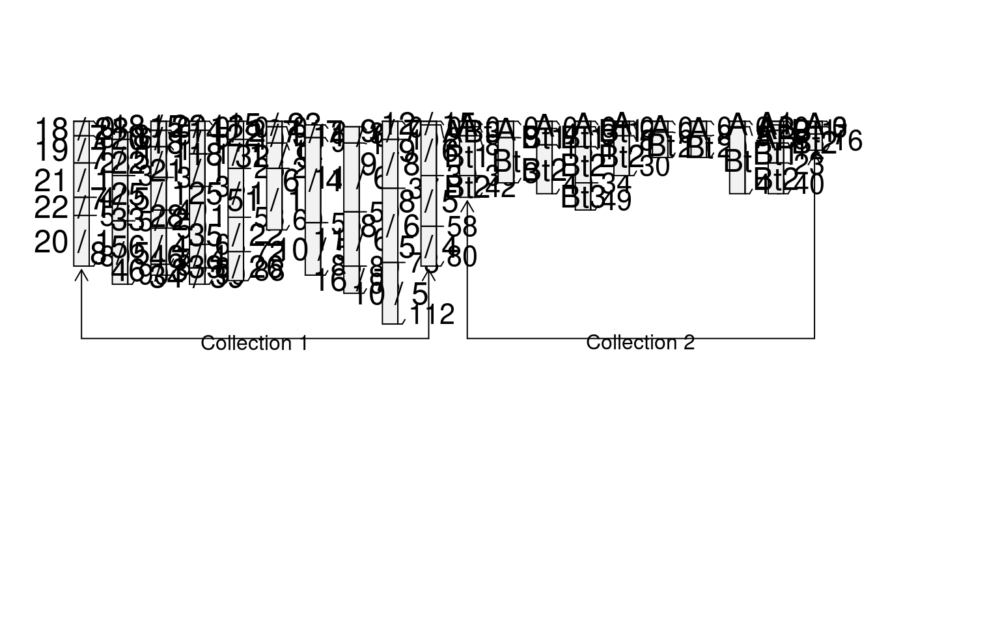
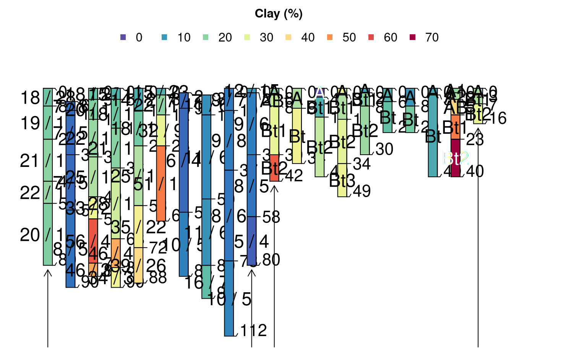
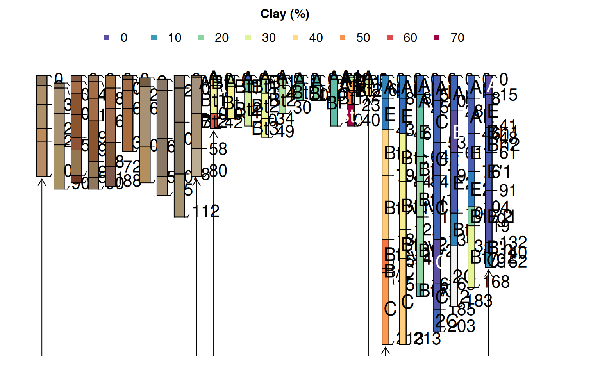

Plot Multiple SoilProfileCollection Objects
plotMultipleSPC(
spc.list,
group.labels,
args = rep(list(NA), times = length(spc.list)),
merged.legend = NULL,
merged.colors = c("#5E4FA2", "#3288BD", "#66C2A5", "#ABDDA4", "#E6F598", "#FEE08B",
"#FDAE61", "#F46D43", "#D53E4F", "#9E0142"),
merged.legend.title = merged.legend,
arrow.offset = 2,
bracket.base.depth = 95,
label.offset = 2,
label.cex = 0.75,
...
)a list of SoilProfileCollection objects
a vector of group labels, one for each
SoilProfileCollection object
a list of arguments passed to plotSPC, one for each
SoilProfileCollection object
name of a horizon level attribute from which to create thematic sketches and merged legend
vector of colors used to create thematic sketches from a shared horizon level attribute
legend title
vertical offset in depth from base of start / end profiles and group bracket arrows
baseline depth used for group brackets
vertical offset of group labels from baseline
label size
additional arguments to the first call to plotSPC
Combine multiple SoilProfileCollection objects into a single profile sketch,
with annotated groups.
See examples below for usage.
For thematic sketches, use the merged.legend argument instead of color argument to plotSPC
##
## Simple Example
##
# using default arguments to plotSPC()
# load sample data
data(sp3)
data(sp4)
# promote to SoilProfileCollection
depths(sp3) <- id ~ top + bottom
depths(sp4) <- id ~ top + bottom
# combine into a list
spc.list <- list(sp3, sp4)
# argument list
arg.list <- list(
list(name='name', id.style='top'),
list(name='name', id.style='side')
)
# plot multiple SPC objects,
# with list of named arguments for each call to plotSPC
par(mar=c(1,1,3,3))
plotMultipleSPC(
spc.list,
group.labels = c('Collection 1', 'Collection 2'),
args = arg.list,
bracket.base.depth = 120, label.cex = 1
)

# specify a different max.depth
plotMultipleSPC(
spc.list,
group.labels = c('Collection 1', 'Collection 2'),
args = arg.list,
bracket.base.depth = 120, label.cex = 1,
max.depth = 250
)

##
## Merged Legend Example
##
# merged legend based on hz attribute 'clay'
# reset sample data
data(sp3)
data(sp4)
# promote to SoilProfileCollection
depths(sp3) <- id ~ top + bottom
#> This is already a SoilProfileCollection-class object, doing nothing.
depths(sp4) <- id ~ top + bottom
#> This is already a SoilProfileCollection-class object, doing nothing.
# combine into a list
spc.list <- list(sp3, sp4)
# argument list
arg.list <- list(
list(name='name', id.style='top'),
list(name='name', id.style='side')
)
par(mar=c(1,1,3,3))
plotMultipleSPC(
spc.list,
group.labels = c('Collection 1', 'Collection 2'),
args = arg.list,
label.cex = 1,
merged.legend = 'clay', merged.legend.title = 'Clay (%)'
)

##
## Complex Merged Legend Example
##
# create a merged legend from "clay" in sp4 and jacobs2000
# use "soil_color" from sp3
# reset sample data
data(sp3)
data(sp4)
data(jacobs2000)
# promote to SoilProfileCollection
depths(sp3) <- id ~ top + bottom
#> This is already a SoilProfileCollection-class object, doing nothing.
depths(sp4) <- id ~ top + bottom
#> This is already a SoilProfileCollection-class object, doing nothing.
# remove 'clay' column from sp3
sp3$clay <- NULL
# combine into a list
spc.list <- list(sp3, sp4, jacobs2000)
# try some variations on the default arguments
# `clay` is missing in the first SPC, safe to specify another column for colors
arg.list <- list(
list(color = 'soil_color', id.style='top', name = NA, width = 0.3, hz.depths = TRUE),
list(name='name', id.style='side', name.style = 'center-center'),
list(name='name', id.style='side', name.style = 'left-center', hz.depths = TRUE)
)
par(mar=c(1,1,3,3))
plotMultipleSPC(
spc.list,
group.labels = c('sp3', 'sp4', 'jacobs2000'),
label.offset = 3,
args = arg.list,
merged.legend = 'clay', merged.legend.title = 'Clay (%)',
axis.line.offset = 0
)
